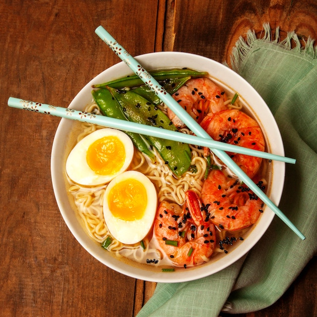

Ramen

Description
Ramen is a quick and easy meal to fill one's stomach.
Ingredients
- 1 instant ramen packet
- 1 stalk of green onions
- 1 egg
- 4 pieces of shrimp
- 1 cup of snow peas
Steps
- Boil a small pot of water and then place 1 egg inside.
- Wash 1 stalk of green onions and chop into small pieces.
- Throw ramen noodles, seasoning and water into a pot.
- Once the water starts boiling, toss 4 pieces of shrimp
and 1 cup of snow peas inside.
- Mix and let the pot simmer until cooked.
- Pour the pot into a bowl and toss the green onions on top.
- Remove the boiled egg. Peel and cut in half. Then place the egg on top.